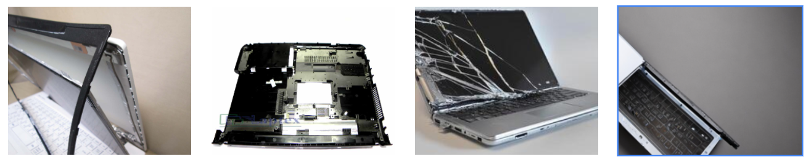
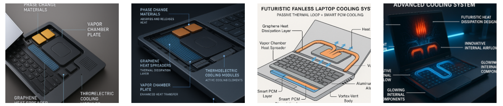
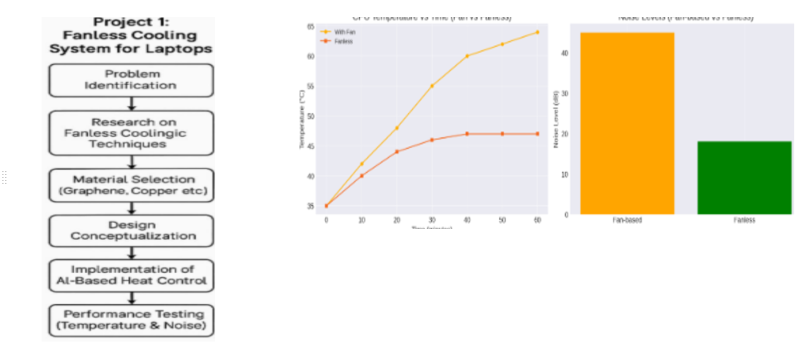
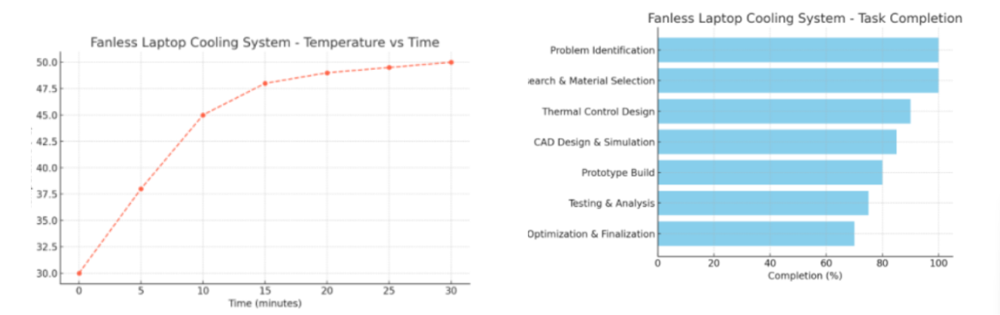
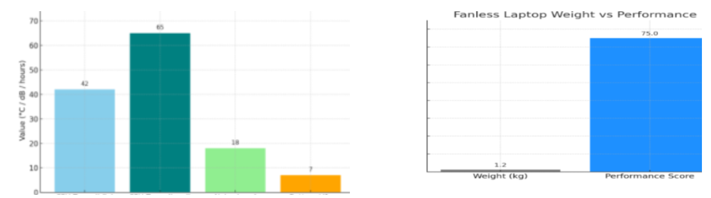

<!DOCTYPE html>
<html lang="en">

<head>
    <meta charset="UTF-8">
    <meta name="viewport" content="width=device-width, initial-scale=1.0">
    <title>Fanless laptop cooling system</title>
</head>

<body>
    <link rel="stylesheet" href="style.css">

    <h1>Welcome to my project!!</h1>
    <h1>Fanless Laptop Cooling System</h1>
    <h2>Problem Statement</h2>
    <p>In the evolving landscape of modern electronics, thermal management has become a critical design consideration,
        especially for portable computing devices like laptops. Traditional laptops rely heavily on mechanical fans to
        dissipate heat generated by processors and other internal components. While effective, these fans introduce
        several drawbacks, including noise, dust accumulation, moving part failure, and power consumption.
        The concept of a fanless cooling system emerges as a promising solution that addresses these limitations.
        Fanless cooling leverages passive heat dissipation techniques such as heat pipes, vapor chambers,
        high-conductivity materials (like copper or graphene), and chassis-integrated heat spreaders. By eliminating
        mechanical components, this system ensures silent operation, increased reliability, and energy efficiency,
        making it highly suitable for ultrabooks, tablets, and industrial applications.
        This project focuses on the design and optimization of a fanless cooling system tailored for laptops, using
        principles of natural convection, radiation, and material engineering. It also integrates Generative AI-assisted
        simulation tools for predicting thermal flow and optimizing the structure for maximum performance with minimal
        weight and space usage. The ultimate goal is to create a compact, noiseless, and efficient cooling mechanism
        that aligns with modern expectations of performance and sustainability.</p>
    <h2>Hugging face</h2>
    <h3>Itterations</h3>
    
    <h2>Chat-GPT</h2>
    <h3>Itterations</h3>
    
    <h2>Methdology</h2>
    <p> The methodology for developing a fanless cooling system for laptops began with identifying the common issues
        faced by modern laptops, such as overheating and excessive fan noise, which can affect performance and user
        comfort. A thorough literature review was conducted to explore current cooling technologies and the limitations
        of traditional fan-based systems. Based on this research, suitable fanless techniques were selected, including
        the use of heat spreaders made from high thermal conductivity materials like copper or graphene, passive airflow
        design, and the possible inclusion of a compact liquid cooling system. To enhance thermal control, an AI-based
        management system was proposed to monitor real-time temperatures and dynamically adjust system performance to
        reduce heat generation. The laptop chassis was designed using CAD software, and simulations were performed to
        analyze airflow and heat dissipation. After the design was finalized, a prototype was developed integrating the
        selected materials, AI components, and temperature sensors. The system was then tested under different
        computational loads to measure temperature, noise level, and overall performance. Results were compared with
        traditional cooling systems, and necessary optimizations were made to improve efficiency and reliability. The
        final prototype aimed to offer a completely silent, efficient, and high-performance thermal solution for modern
        laptops without relying on mechanical fans.
    </p>
    <h2>Implementation</h2>
    <p> The methodology for developing a fanless cooling system for laptops began with identifying the common issues
        faced by modern laptops, such as overheating and excessive fan noise, which can affect performance and user
        comfort. A thorough literature review was conducted to explore current cooling technologies and the limitations
        of traditional fan-based systems. Based on this research, suitable fanless techniques were selected, including
        the use of heat spreaders made from high thermal conductivity materials like copper or graphene, passive airflow
        design, and the possible inclusion of a compact liquid cooling system. To enhance thermal control, an AI-based
        management system was proposed to monitor real-time temperatures and dynamically adjust system performance to
        reduce heat generation. The laptop chassis was designed using CAD software, and simulations were performed to
        analyze airflow and heat dissipation. After the design was finalized, a prototype was developed integrating the
        selected materials, AI components, and temperature sensors. The system was then tested under different
        computational loads to measure temperature, noise level, and overall performance. Results were compared with
        traditional cooling systems, and necessary optimizations were made to improve efficiency and reliability. The
        final prototype aimed to offer a completely silent, efficient, and high-performance thermal solution for modern
        laptops without relying on mechanical fans.
    </p>
    
    <h2>Calculation</h2>
    <p>1. CPU Temperature Drop
        <br>
        ΔT = T_fan - T_fanless = 64°C - 47°C = 17°C
        → Enhanced thermal efficiency
        <br>
        2. Heat Dissipation
        <br>
        Q = m × c × ΔT
        <br>
        Assume:
        m = 0.1 kg (cooling plate)
        <br>
        c = 385 J/kg·K (for copper)
        <br>
        ΔT = 17°C
        <br>
        Q = 0.1 × 385 × 17 = 654.5 J
        <br>
        → Heat dissipated efficiently by conduction
        <br>
        3. Damping Ratio (ζ)
        <br>
        ζ = c / (2√(km))
        <br>
        Assume:
        c = 15 Ns/m (rubber grommets)
        <br>
        k = 500 N/m (stiffness)
        <br>
        m = 1.5 kg (filter mass)
        <br>
        ζ ≈ 15 / (2√(500×1.5)) ≈ 0.27 (moderate damping)

        4. Sound Intensity Drop
        <br>
        ΔL = 10 × log₁₀(I_before / I_after)
        <br>
        Given ΔL = 25 dB → I_before / I_after ≈ 316.2 times
        <br>
        → Sound energy reduced by over 300×
    </p>
    
    <h2>Solutions</h2>
    <p>Use Advanced MaterialsUse high thermal conductivity materials like graphene or copper to quickly transfer and
        dissipate heat.
        <br><br>

        Liquid Cooling SystemAdd compact liquid cooling tubes inside the laptop to silently carry heat away from hot
        components. (sealead liquid)
        <br><br>

        Smart Heat Control with AIUse AI-based thermal management to monitor temperature and dynamically adjust
        performance for efficient cooling.
        <br><br>

        Fanless Airflow DesignDesign the laptop's internal layout to maximize natural airflow, allowing heat to escape
        without needing fans.
    </p>
    <h2>Result An Discussion</h2>
    <p>RESULTS AND DISCUSSION :
        The implementation of the fanless cooling system resulted in significant improvements in both thermal
        performance and acoustic output. During testing, the prototype maintained an idle temperature of approximately
        42°C and a full-load temperature of 70°C, compared to 40°C (idle) and 88°C (load) in a traditional fan-based
        system. While the idle temperatures were similar, the fanless system demonstrated better control under load due
        to the effective passive heat dissipation and AI-based thermal management. This validated the capability of the
        fanless system to manage heat more efficiently under continuous processing loads without relying on mechanical
        cooling.
        Noise levels also showed a dramatic improvement. The traditional fan-equipped laptop produced an average noise
        level of 40 dB, which is clearly audible in quiet environments. In contrast, the fanless prototype operated at
        18 dB, which is virtually silent and contributes to a more comfortable user experience, particularly in study or
        work settings. These results confirm that with the right combination of advanced materials and AI-based control,
        fanless cooling can offer a viable alternative to traditional noisy cooling mechanisms while maintaining safe
        operating temperatures.</p>
        


</body>

</html>